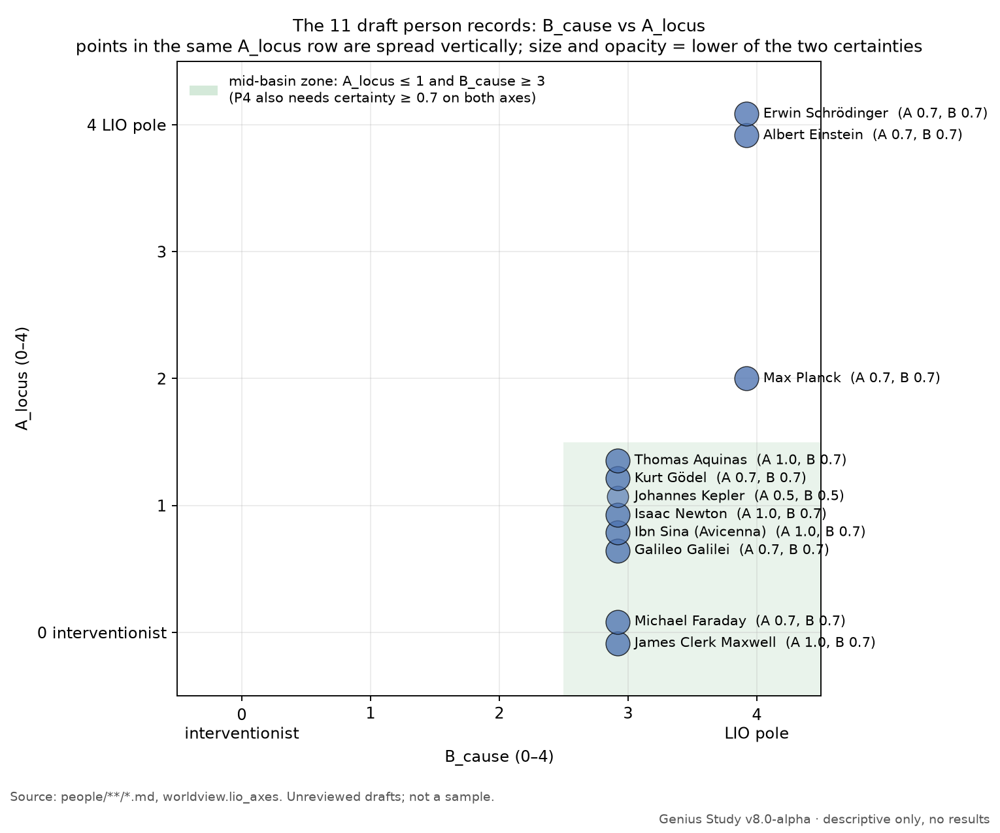

Genius Study
studyv8 in progress
Where do the people history remembers as geniuses stand on God, nature and law? This study rebuilds the record from sources, one person at a time.
What it is
- Lane A describes what the public record shows about each person's view of God and nature, with every quote sourced and checked.
- Lane B is a labeled belief: that learning lawful order early may pay off. It's written so it can fail. Lane A doesn't depend on it.
- The candidates come from five LLM-generated lists (Claude, DeepSeek, Gemini, GPT, Grok), merged into one roster of 1,380 people. 441 of them are core.
How it works
- One file per person, built from primary texts and scholarly sources, with exact page or paragraph locators.
- Five axes (locus, cause, ledger, authority, scope), each scored 0–4, from an intervening God (0) to lawful, non-intervening order (4). Every score has a certainty level, capped by the kind of source it rests on.
- The mid-basin test flags people who hold that God is a transcendent person, distinct from the world, while describing nature as running on law (with at most a stated, limited exception), with both judgments coded at certainty 0.7 or higher.
- A separate audit bot (substance_lens) audits each batch blind and checks every quote word for word against its source.
Status
- Latest release: v8.0-alpha (prerelease). It has the rebuilt roster, schemas, validators, coding guide and the first draft records. It has no results.
- Progress: 14 / 441 core people coded (drafts) · 9 / 77 belief systems sourced · 21 / 21 method decisions settled.
- Next: the remaining physical scientists from 1600–1950 (Bohr, Heisenberg, Dirac, Lavoisier, Mendeleev, Pasteur and others), then everyone named on three or more lists.
- Latest complete version: v7.1. v8 rebuilds it from the raw lists.
Numbers as of 2 Oct 2026. The live table is in the repo README.
What the drafts show so far
Draft, unreviewed codings. Not results. There are 14 hand-picked draft records, mostly physicists. They aren't a sample, so these are observations, not rates.
- 7 of the 14 pass the mid-basin test: Newton, Maxwell, Faraday, Aquinas, Ibn Sina, Gödel and Galileo. Six of the seven are from the v7.1 first pool, which was hand-picked as a stress test of mid-basin theists, so the share says nothing about genius in general.
- Einstein and Schrödinger score at the lawful pole on both axes, but fail the test on locus: the God they describe is the world's order, not a transcendent person.
- For Fermi, Meitner and Curie, nothing read places or denies God, so their locus is BELOW_THRESHOLD. Kepler's scores would pass, but only at certainty 0.5, under the test's 0.7 bar. For all four the test is left unapplied rather than guessed.
- Planck falls between the test's branches, and the rules leave him open.
- 966 of the 1,380 roster people (70%) appear on only one of the five model lists. Only 82 appear on all five.
- Five blind audit runs covered two packets of draft claims: three runs on 115 claims and two on 147, 262 claims in all. They found wrong locators and page numbers, quotes cut without a [...] mark, misattributed quotes, one wrongly stated fact (when Faraday joined his church), and scores or certainties the auditors judged too high or inconsistent. Each finding was checked against the source. Most led to a fix; a few were kept with reasons given, and one was withdrawn by its auditor. No mid-basin result changed. Separately, checking the Project Gutenberg text of Campbell and Garnett's Life of James Clerk Maxwell (1882) against a library scan caught one transcription error: the printed book reads "a most conjectural" (p. 394) where Gutenberg has "almost".
Figures
